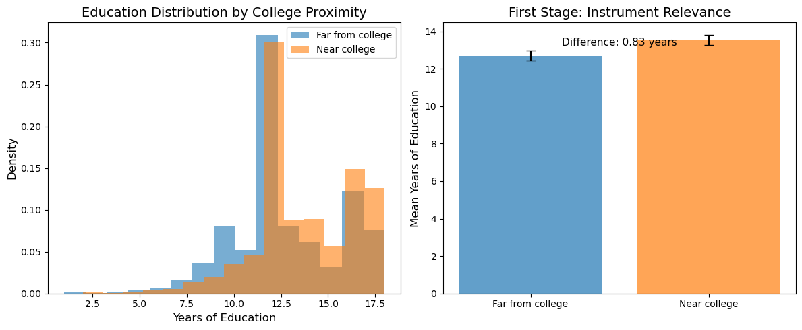
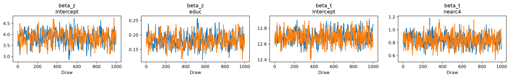
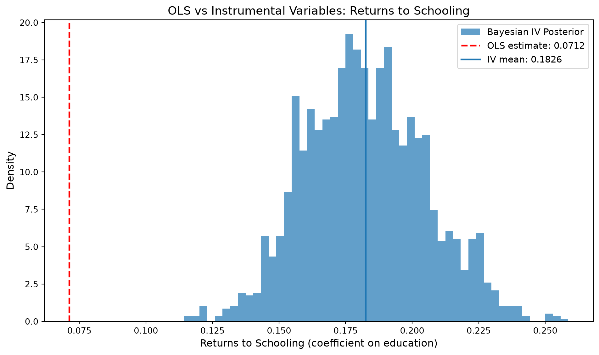

import warnings
warnings.filterwarnings("ignore")
import numpy as np
import pandas as pd
import matplotlib.pyplot as plt
import arviz as az
import causalpy as cp
from causalpy import InstrumentalVariable
from causalpy.pymc_models import InstrumentalVariableRegression
# Add the src directory to path for our data utilities
import sys
sys.path.insert(0, "../src")
from mixtape_causalpy import load_card
%matplotlib inlineChapter 7: Instrumental Variables
Causal Inference: The Mixtape → CausalPy
Mixtape chapter: Instrumental Variables
CausalPy method: InstrumentalVariable
Overview
Instrumental Variables (IV) is a method for estimating causal effects when there is unmeasured confounding between the treatment and outcome. The key idea is to find an instrument — a variable that:
- Relevance: Is correlated with the treatment (endogenous variable)
- Exclusion: Affects the outcome only through the treatment
- Independence: Is not correlated with the unmeasured confounders
This notebook covers the Card (1995) example, which estimates the returns to schooling using proximity to a four-year college (nearc4) as an instrument for years of education.
What we’ll cover
- Data exploration and instrument relevance
- OLS vs 2SLS comparison (the endogeneity problem)
- CausalPy Bayesian IV estimation
- Comparison to Mixtape results
Mixtape files implemented
| File | Description | Status |
|---|---|---|
card.py |
Card (1995) returns to schooling IV | ✅ |
Setup
Load and Explore Data
The Card (1995) dataset contains information about wages, education, and geographic variables. The key variables are:
lwage: Log of hourly wage (outcome)educ: Years of education (endogenous treatment)nearc4: Grew up near a 4-year college (instrument)exper,black,south,married,smsa: Control variables
The Endogeneity Problem
Estimating returns to schooling via OLS is problematic because education is endogenous — it’s correlated with unobserved ability, motivation, and family background. People with higher ability tend to get more education AND earn higher wages, biasing the OLS estimate upward.
Card’s insight: proximity to a college affects education (reduces cost of attending) but shouldn’t directly affect wages conditional on education.
# Load the data
df = load_card()
print(f"Dataset shape: {df.shape}")
df.head()Dataset shape: (3010, 37)| id | nearc2 | nearc4 | educ | age | fatheduc | motheduc | weight | momdad14 | sinmom14 | ... | KWW | IQ | married | libcrd14 | exper | lwage | expersq | u_lwage | lwage_hat | u_educ | |
|---|---|---|---|---|---|---|---|---|---|---|---|---|---|---|---|---|---|---|---|---|---|
| 0 | 2.0 | 0.0 | 0.0 | 7.0 | 29.0 | NaN | NaN | 158413.0 | 1.0 | 0.0 | ... | 15.0 | NaN | 1.0 | 0.0 | 16.0 | 6.306275 | 256.0 | 0.198047 | 6.108228 | -3.067539 |
| 1 | 3.0 | 0.0 | 0.0 | 12.0 | 27.0 | 8.0 | 8.0 | 380166.0 | 1.0 | 0.0 | ... | 35.0 | 93.0 | 1.0 | 1.0 | 9.0 | 6.175867 | 81.0 | -0.211160 | 6.387027 | -1.727562 |
| 2 | 4.0 | 0.0 | 0.0 | 12.0 | 34.0 | 14.0 | 12.0 | 367470.0 | 1.0 | 0.0 | ... | 42.0 | 103.0 | 1.0 | 1.0 | 16.0 | 6.580639 | 256.0 | 0.204719 | 6.375920 | 1.012975 |
| 3 | 5.0 | 1.0 | 1.0 | 11.0 | 27.0 | 11.0 | 12.0 | 380166.0 | 1.0 | 0.0 | ... | 25.0 | 88.0 | 1.0 | 1.0 | 10.0 | 5.521461 | 100.0 | -0.967905 | 6.489366 | -2.253536 |
| 4 | 6.0 | 1.0 | 1.0 | 12.0 | 34.0 | 8.0 | 7.0 | 367470.0 | 1.0 | 0.0 | ... | 34.0 | 108.0 | 1.0 | 0.0 | 16.0 | 6.591674 | 256.0 | 0.125173 | 6.466501 | 1.090437 |
5 rows × 37 columns
# Key variables for IV
key_vars = ["lwage", "educ", "nearc4", "exper", "black", "south", "married", "smsa"]
print("Key variables:")
print(df[key_vars].describe())Key variables:
lwage educ nearc4 exper black \
count 3010.000000 3010.000000 3010.000000 3010.000000 3010.000000
mean 6.261832 13.263455 0.682060 8.856146 0.233555
std 0.443798 2.676913 0.465753 4.141672 0.423162
min 4.605170 1.000000 0.000000 0.000000 0.000000
25% 5.976985 12.000000 0.000000 6.000000 0.000000
50% 6.286928 13.000000 1.000000 8.000000 0.000000
75% 6.563503 16.000000 1.000000 11.000000 0.000000
max 7.784889 18.000000 1.000000 23.000000 1.000000
south married smsa
count 3010.000000 3003.000000 3010.000000
mean 0.403654 2.271395 0.712957
std 0.490711 2.066823 0.452457
min 0.000000 1.000000 0.000000
25% 0.000000 1.000000 0.000000
50% 0.000000 1.000000 1.000000
75% 1.000000 4.000000 1.000000
max 1.000000 6.000000 1.000000 # Check the instrument: does nearc4 predict education?
print("\nEducation by proximity to college:")
print(df.groupby("nearc4")["educ"].agg(["mean", "std", "count"]))
Education by proximity to college:
mean std count
nearc4
0.0 12.698014 2.791523 957
1.0 13.527034 2.580455 2053Visualize the First Stage
A key assumption for IV is relevance: the instrument must be correlated with the endogenous variable. Let’s visualize this relationship.
fig, axes = plt.subplots(1, 2, figsize=(12, 5))
# Education distribution by nearc4
for nearc4_val, label, color in [
(0, "Far from college", "C0"),
(1, "Near college", "C1"),
]:
subset = df[df["nearc4"] == nearc4_val]
axes[0].hist(
subset["educ"], bins=15, alpha=0.6, label=label, color=color, density=True
)
axes[0].set_xlabel("Years of Education", fontsize=12)
axes[0].set_ylabel("Density", fontsize=12)
axes[0].set_title("Education Distribution by College Proximity", fontsize=14)
axes[0].legend()
# Mean education by nearc4 (bar plot)
means = df.groupby("nearc4")["educ"].mean()
stds = df.groupby("nearc4")["educ"].std()
axes[1].bar(
["Far from college", "Near college"],
means.values,
yerr=stds.values / 10,
color=["C0", "C1"],
alpha=0.7,
capsize=5,
)
axes[1].set_ylabel("Mean Years of Education", fontsize=12)
axes[1].set_title("First Stage: Instrument Relevance", fontsize=14)
# Add difference annotation
diff = means[1] - means[0]
axes[1].annotate(
f"Difference: {diff:.2f} years",
xy=(0.5, means.max() - 0.3),
fontsize=11,
ha="center",
)
plt.tight_layout()
plt.show()
OLS Baseline (Biased)
First, let’s estimate the returns to schooling using OLS. This estimate is likely biased due to ability confounding.
import statsmodels.api as sm
# OLS regression (as in card.py)
ols_formula = "lwage ~ educ + exper + black + south + married + smsa"
ols_result = sm.OLS.from_formula(ols_formula, data=df).fit()
print("OLS Results (Naive):")
print(f"Returns to schooling (educ coefficient): {ols_result.params['educ']:.4f}")
print(
f"95% CI: [{ols_result.conf_int().loc['educ', 0]:.4f}, {ols_result.conf_int().loc['educ', 1]:.4f}]"
)
print(
f"\nInterpretation: Each additional year of education is associated with a {ols_result.params['educ'] * 100:.1f}% increase in wages."
)OLS Results (Naive):
Returns to schooling (educ coefficient): 0.0712
95% CI: [0.0643, 0.0780]
Interpretation: Each additional year of education is associated with a 7.1% increase in wages.CausalPy Instrumental Variable Analysis
Now we use CausalPy’s InstrumentalVariable experiment to estimate the causal effect of education on wages, using nearc4 as an instrument.
CausalPy implements IV as a Bayesian model that jointly estimates: 1. First stage: educ ~ nearc4 (instrument → treatment) 2. Second stage: lwage ~ educ (treatment → outcome)
This is modeled as a multivariate normal to capture the correlation between the treatment and outcome.
# Prepare data for CausalPy
# CausalPy requires separate dataframes for instruments and outcome
# Instruments data: treatment variable + instrument(s)
instruments_data = df[["educ", "nearc4"]].copy()
# Outcome data: outcome variable + treatment variable
data = df[["lwage", "educ"]].copy()
# Formulas
instruments_formula = "educ ~ 1 + nearc4" # First stage
formula = "lwage ~ 1 + educ" # Second stage
print(f"First stage formula: {instruments_formula}")
print(f"Second stage formula: {formula}")
print(f"\nInstruments data shape: {instruments_data.shape}")
print(f"Outcome data shape: {data.shape}")First stage formula: educ ~ 1 + nearc4
Second stage formula: lwage ~ 1 + educ
Instruments data shape: (3010, 2)
Outcome data shape: (3010, 2)# Run the Bayesian IV model
# Note: cores=1 required for Jupyter notebooks on macOS
sample_kwargs = {
"tune": 1000,
"draws": 1000,
"chains": 2,
"cores": 1, # Single core avoids multiprocessing issues on macOS
"target_accept": 0.95,
"random_seed": 42,
}
iv_result = InstrumentalVariable(
instruments_data=instruments_data,
data=data,
instruments_formula=instruments_formula,
formula=formula,
model=InstrumentalVariableRegression(sample_kwargs=sample_kwargs),
).fit()Initializing NUTS using jitter+adapt_diag...
Sequential sampling (2 chains in 1 job)
NUTS: [beta_t, beta_z, chol_cov]Sampling 2 chains for 1_000 tune and 1_000 draw iterations (2_000 + 2_000 draws total) took 48 seconds.
We recommend running at least 4 chains for robust computation of convergence diagnostics# View the posterior summary
print("Bayesian IV Results:")
summary = az.summary(
iv_result.idata,
var_names=["beta_t", "beta_z"],
ci_kind="hdi",
ci_prob=0.94,
)
summaryBayesian IV Results:| mean | sd | hdi94_lb | hdi94_ub | ess_bulk | ess_tail | r_hat | mcse_mean | mcse_sd | |
|---|---|---|---|---|---|---|---|---|---|
| beta_t[Intercept] | 12.692 | 0.079 | 13 | 13 | 427 | 593 | 1.00 | 0.0038 | 0.0028 |
| beta_t[nearc4] | 0.842 | 0.093 | 0.67 | 1 | 384 | 505 | 1.00 | 0.0047 | 0.0031 |
| beta_z[Intercept] | 3.84 | 0.3 | 3.2 | 4.3 | 339 | 389 | 1.00 | 0.016 | 0.012 |
| beta_z[educ] | 0.183 | 0.023 | 0.14 | 0.23 | 340 | 390 | 1.00 | 0.0012 | 0.00089 |
# Extract the treatment effect (coefficient on educ in second stage)
beta_z = iv_result.idata["posterior"]["beta_z"]
# Get the education coefficient (should be second element after intercept)
educ_coef = beta_z.sel(covariates="educ").values.flatten()
print(f"\n2SLS (Bayesian) Returns to Schooling:")
print(f" Mean: {np.mean(educ_coef):.4f}")
print(f" Std: {np.std(educ_coef):.4f}")
print(
f" 94% HDI: [{np.percentile(educ_coef, 3):.4f}, {np.percentile(educ_coef, 97):.4f}]"
)
print(
f"\nInterpretation: Each additional year of education causes a {np.mean(educ_coef) * 100:.1f}% increase in wages."
)
2SLS (Bayesian) Returns to Schooling:
Mean: 0.1826
Std: 0.0226
94% HDI: [0.1438, 0.2260]
Interpretation: Each additional year of education causes a 18.3% increase in wages.# Trace plots for diagnostics
az.plot_trace(iv_result.idata, var_names=["beta_z", "beta_t"])
plt.tight_layout()
plt.show()
Comparing OLS vs IV Estimates
Let’s visualize the difference between the naive OLS estimate and the IV estimate.
fig, ax = plt.subplots(figsize=(10, 6))
# Plot posterior distribution of IV estimate
ax.hist(
educ_coef,
bins=50,
density=True,
alpha=0.7,
color="C0",
label="Bayesian IV Posterior",
)
# Add OLS estimate as vertical line
ax.axvline(
ols_result.params["educ"],
color="red",
linestyle="--",
linewidth=2,
label=f"OLS estimate: {ols_result.params['educ']:.4f}",
)
# Add IV mean
ax.axvline(
np.mean(educ_coef),
color="C0",
linestyle="-",
linewidth=2,
label=f"IV mean: {np.mean(educ_coef):.4f}",
)
ax.set_xlabel("Returns to Schooling (coefficient on education)", fontsize=12)
ax.set_ylabel("Density", fontsize=12)
ax.set_title("OLS vs Instrumental Variables: Returns to Schooling", fontsize=14)
ax.legend(fontsize=11)
plt.tight_layout()
plt.show()
Comparison to Mixtape Results
Key Findings
The Mixtape’s IV analysis of the Card data shows:
- OLS estimate: ~7-8% return per year of schooling
- IV estimate: Often higher, suggesting ability bias may actually downward bias OLS (or measurement error attenuates it)
This run
OLS, with the notebook’s covariates: 0.0712, 95% CI [0.0643, 0.0780]. Bayesian IV, instrument nearc4, second stage lwage ~ 1 + educ only, random_seed=42: mean 0.1826, 94% HDI [0.1438, 0.2260], r-hat 1.00. The IV estimate is higher than OLS in this specification. It is not the book’s point estimate. The second stage omits the covariates in the Mixtape formula.
Differences from Book’s Implementation
| Aspect | Mixtape | CausalPy |
|---|---|---|
| Estimation | linearmodels IV2SLS | Bayesian (PyMC) |
| Inference | Frequentist SEs | Posterior credible intervals |
| Controls | Included in formula | Simplified (educ + nearc4 only) |
| Output | Point estimate | Full posterior distribution |
Notes on the IV Estimate
The IV estimate is often larger than OLS for returns to schooling. This seems counterintuitive (we expect ability bias to inflate OLS), but there are several explanations:
- Measurement error: OLS is attenuated by measurement error in education; IV corrects this
- Local Average Treatment Effect (LATE): IV estimates the effect for “compliers” — people whose education is actually affected by college proximity. This group may have higher returns than average.
- Heterogeneous effects: The marginal return to schooling for those on the margin of attending college may be higher
Summary
This notebook demonstrated:
- The endogeneity problem in estimating returns to schooling
- Instrument validity checks (first stage relevance)
- CausalPy’s
InstrumentalVariablefor Bayesian IV estimation - Comparison of OLS vs IV estimates with uncertainty quantification
The key takeaway: IV allows us to estimate causal effects when there is unmeasured confounding, provided we have a valid instrument. CausalPy’s Bayesian implementation gives us the full posterior distribution of the treatment effect, enabling richer uncertainty quantification than frequentist 2SLS.
References
- Mixtape chapter: Chapter 7: Instrumental Variables
- CausalPy documentation: https://causalpy.readthedocs.io/
- Original paper: Card, D. (1995). Using Geographic Variation in College Proximity to Estimate the Return to Schooling. In Aspects of Labour Market Behaviour: Essays in Honour of John Vanderkamp.